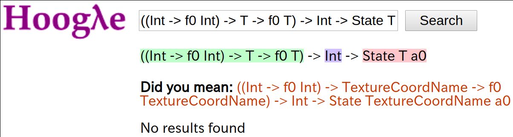
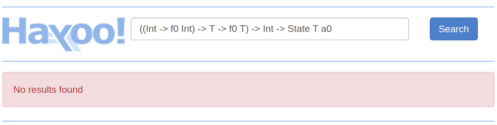
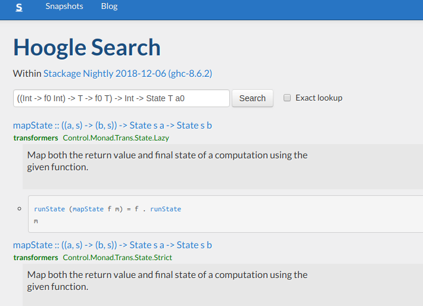

と Refinement Hole Fits
ghc-8.6.1 で追加された
について紹介します
Typed-Holes に追加された新たな機能
ところで
ghc-7.8 で追加された機能
ソースコード内にアンダースコア "_" で穴をあけると
f :: String
f = _ "hello, world"
コンパイル時にエラーとして穴の情報を教えてくれる
example.hs:6:5: error:
• Found hole: _ :: [Char] -> String
• In the expression: _
In the expression: _ "hello, world"
In an equation for ‘f’: f = _ "hello, world"
• Relevant bindings include
f :: String
(bound at example.hs:6:1)
「穴の型は [Char] -> String だよ!」
何か関数を入れたいけどその型がわからないときに
穴を入れるとエラーとしてその型を教えてくれる機能
穴を空ける
型がわかる
その型の関数を探す
穴を埋める
Hoogle を使う?
↓
Valid Hole Fits
を利用しよう！
Typed-Holesのエラーで
穴の型を持つ関数を表示してくれる機能
Valid hole fits が追加された Typed-Holes のエラー
example.hs:6:5: error:
• Found hole: _ :: [Char] -> String
• In the expression: _
In the expression: _ "hello, world"
In an equation for ‘f’: f = _ "hello, world"
• Relevant bindings include
it :: [Char] -> String (bound at <interactive>:2:1)
Valid hole fits include
cycle :: forall a. [a] -> [a]
init :: forall a. [a] -> [a]
reverse :: forall a. [a] -> [a]
tail :: forall a. [a] -> [a]
fail :: forall (m :: * -> *) a. Monad m => String -> m a
show :: forall a. Show a => a -> String
(Some hole fits suppressed; use -fmax-valid-hole-fits=N or -fno-max-valid-hole-fits)
cycle, init, reverse などの関数を提案してくれる
※ -funclutter-valid-hole-fits オプションで表示を簡単にしています．
import Control.Lens
import Control.Monad.State
newtype T = T { _v :: Int }
val :: Lens' T Int
val f (T i) = T <$> f i
updT :: T -> T
updT t = t &~ do
_ val (1 :: Int)
この Typed-Hole の型は？
((Int -> f0 Int) -> T -> f0 T)
-> Int -> State T a0
lens.hs:17:3: error:
• Found hole:
_ :: ((Int -> f0 Int) -> T -> f0 T) -> Int -> State T a0
Where: ‘f0’ is an ambiguous type variable
‘a0’ is an ambiguous type variable
• In the expression: _
In a stmt of a 'do' block: _ val (1 :: Int)
In the second argument of ‘(&~)’, namely ‘do _ val (1 :: Int)’

無い...

無い...

Valid hole fits include
(#=) :: forall s (m :: * -> *) a b.
MonadState s m =>
ALens s s a b -> b -> m ()
(<#=) :: forall s (m :: * -> *) a b.
MonadState s m =>
ALens s s a b -> b -> m b
(<*=) :: forall s (m :: * -> *) a.
(MonadState s m, Num a) =>
LensLike' ((,) a) s a -> a -> m a
(<+=) :: forall s (m :: * -> *) a.
(MonadState s m, Num a) =>
LensLike' ((,) a) s a -> a -> m a
(<-=) :: forall s (m :: * -> *) a.
(MonadState s m, Num a) =>
LensLike' ((,) a) s a -> a -> m a
(<<*=) :: forall s (m :: * -> *) a.
(MonadState s m, Num a) =>
LensLike' ((,) a) s a -> a -> m a
良さそうなのが出てきた！！
穴がある場所のスコープから
使える関数を探してくれる！！
(Programming in Haskell Second Edition,
Chapter 4, Exercise 1)
長さが偶数のリストを半分にする関数
halve :: [a] -> ([a],[a]) を作れ．
> halve [1,2,3,4,5,6]
([1,2,3],[4,5,6])
$ stack repl --resolver nightly-2018-12-06
Prelude> _ :: [a] -> ([a],[a])
<interactive>:1:1: error:
• Found hole: _ :: [a1] -> ([a1], [a1])
Where: ‘a1’ is a rigid type variable bound by
an expression type signature:
forall a1. [a1] -> ([a1], [a1])
at <interactive>:1:6-21
• In the expression: _ :: [a] -> ([a], [a])
In an equation for ‘it’: it = _ :: [a] -> ([a], [a])
• Relevant bindings include
it :: [a] -> ([a], [a]) (bound at <interactive>:1:1)
Valid hole fits include
return :: forall (m :: * -> *) a. Monad m => a -> m a
pure :: forall (f :: * -> *) a. Applicative f => a -> f a
mempty :: forall a. Monoid a => a
return, pure, mempty ???
本当に欲しいものは break, span, splitAt など
Refinement Hole Fits で可能に
オプション -frefinement-level-hole-fits=N
で使えるようにになる
レベル N はフィットが持つ最大の穴の数
$ stack repl --resolver nightly-2018-12-06 --ghci-options -frefinement-level-hole-fits=1 -funclutter-valid-hole-fits
Prelude> _ :: [a] -> ([a],[a])
<interactive>:1:1: error:
• Found hole: _ :: [a1] -> ([a1], [a1])
Where: ‘a1’ is a rigid type variable bound by
an expression type signature:
forall a1. [a1] -> ([a1], [a1])
at <interactive>:1:6-21
• In the expression: _ :: [a] -> ([a], [a])
In an equation for ‘it’: it = _ :: [a] -> ([a], [a])
• Relevant bindings include
it :: [a] -> ([a], [a]) (bound at <interactive>:1:1)
Valid hole fits include
return :: forall (m :: * -> *) a. Monad m => a -> m a
pure :: forall (f :: * -> *) a. Applicative f => a -> f a
mempty :: forall a. Monoid a => a
Valid refinement hole fits include
break (_ :: a1 -> Bool)
where break :: forall a. (a -> Bool) -> [a] -> ([a], [a])
span (_ :: a1 -> Bool)
where span :: forall a. (a -> Bool) -> [a] -> ([a], [a])
splitAt (_ :: Int)
where splitAt :: forall a. Int -> [a] -> ([a], [a])
mapM (_ :: a1 -> ([a1], a1))
where mapM :: forall (t :: * -> *) (m :: * -> *) a b.
(Traversable t, Monad m) =>
(a -> m b) -> t a -> m (t b)
traverse (_ :: a1 -> ([a1], a1))
where traverse :: forall (t :: * -> *) (f :: * -> *) a b.
(Traversable t, Applicative f) =>
(a -> f b) -> t a -> f (t b)
const (_ :: ([a1], [a1]))
where const :: forall a b. a -> b -> a
(Some refinement hole fits suppressed; use -fmax-refinement-hole-fits=N or -fno-max-refinement-hole-fits)
エラーが長くなってる...
Valid refinement hole fits include
break (_ :: a1 -> Bool)
where break :: forall a. (a -> Bool) -> [a] -> ([a], [a])
span (_ :: a1 -> Bool)
where span :: forall a. (a -> Bool) -> [a] -> ([a], [a])
splitAt (_ :: Int)
where splitAt :: forall a. Int -> [a] -> ([a], [a])
mapM (_ :: a1 -> ([a1], a1))
where mapM :: forall (t :: * -> *) (m :: * -> *) a b.
(Traversable t, Monad m) =>
(a -> m b) -> t a -> m (t b)
traverse (_ :: a1 -> ([a1], a1))
where traverse :: forall (t :: * -> *) (f :: * -> *) a b.
(Traversable t, Applicative f) =>
(a -> f b) -> t a -> f (t b)
const (_ :: ([a1], [a1]))
where const :: forall a b. a -> b -> a
break, span, splitAt がある！！
splitAt (_ :: Int) や
span (_ :: a1 -> Bool) のような
Typed-Hole を持つものも見つけてくれる機能
_ :: [a] -> ([a],[a])
↓進化↓
splitAt (_ :: Int) :: [a] -> ([a],[a])
新しい穴についても同様に Hole Fits を探す
halve :: [a] -> ([a],[a])
halve xs = splitAt (length xs `div` 2) xs
アンダースコア (_) で穴をあけると
その型をエラーで教えてくれる
Prelude> _ :: [Int] -> Int
<interactive>:3:1: error:
• Found hole: _ :: [Int] -> Int
• In the expression: _ :: [Int] -> Int
In an equation for ‘it’: it = _ :: [Int] -> Int
• Relevant bindings include
it :: [Int] -> Int (bound at <interactive>:3:1)
Typed-Hole で判明した型から
当てはまる関数を探してくれる
Valid hole fits include
head :: forall a. [a] -> a
last :: forall a. [a] -> a
length :: forall (t :: * -> *) a. Foldable t => t a -> Int
maximum :: forall (t :: * -> *) a. (Foldable t, Ord a) => t a -> a
minimum :: forall (t :: * -> *) a. (Foldable t, Ord a) => t a -> a
product :: forall (t :: * -> *) a. (Foldable t, Num a) => t a -> a
関数の引数として穴を持つものも探してくれる
Valid refinement hole fits include
foldl1 (_ :: Int -> Int -> Int)
where foldl1 :: forall (t :: * -> *) a.
Foldable t =>
(a -> a -> a) -> t a -> a
foldr1 (_ :: Int -> Int -> Int)
where foldr1 :: forall (t :: * -> *) a.
Foldable t =>
(a -> a -> a) -> t a -> a
foldl (_ :: Int -> Int -> Int) (_ :: Int)
where foldl :: forall (t :: * -> *) b a.
Foldable t =>
(b -> a -> b) -> b -> t a -> b
foldr (_ :: Int -> Int -> Int) (_ :: Int)
where foldr :: forall (t :: * -> *) a b.
Foldable t =>
(a -> b -> b) -> b -> t a -> b
const (_ :: Int)
where const :: forall a b. a -> b -> a
($) (_ :: [Int] -> Int)
where ($) :: forall a b. (a -> b) -> a -> b
Typed-Hall : 穴 (_) の型を教えてくれる
Valid Hole Fits : その型の関数を教えてくれる
Refinement Hole Fits : Typed-Holes を含むものまで教えてくれる